At Pear Woodworking LLC we provide an array of services to the general public which include the following:
We store many different sizes of lumber as necessary for common household projects, but our main stock tends to be standard pine boards, pressure treated lumber, plywood, and TREX decking supplies. The uses for these include:
Not all standard lumber comes in a size convenient for the consumer since many homes are built by unique individuals as well as on unique foundations. By contacting us and alerting us to your sizing requirements, we can have your lumber appropriately sized for you in advance saving you the headache of getting the tools out and performing the labor yourself.
We not only provide rough-cut lumber, but also finished lumber for all interior decorative needs. Our millwork services include doors, crown moilding, base moulding, window frames (both standard and custom), and wooden dowels for curtains.
Sometimes it is difficult to find the home of your dreams already built, in which case you have to build it. At Pear Woodworking, we have licensed contractors and structural engineers ready and willing to help you build the home that you've always wanted starting with a foundation. Our frames are made with grade A lumber and can be guaranteed to last the lifetime of your home.
Below are images of the finished products we offer:
| Doors | Lumber | Plywood | TREX |
|---|---|---|---|
| 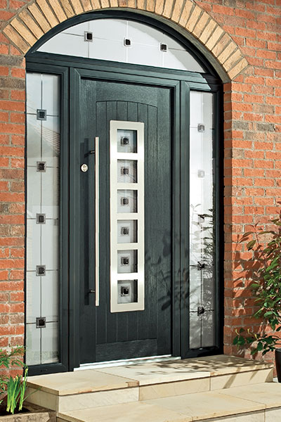 | 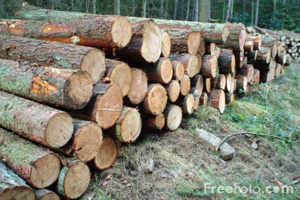 | 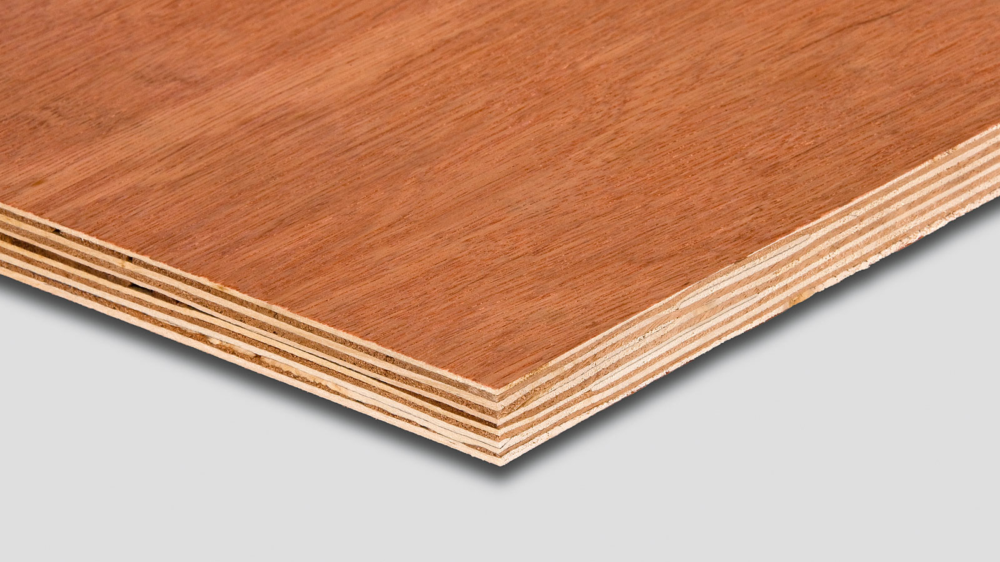 | 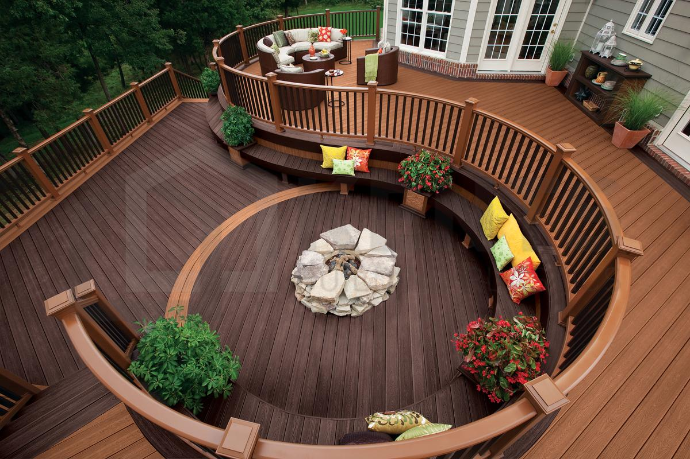 |
| 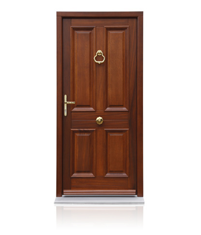 | 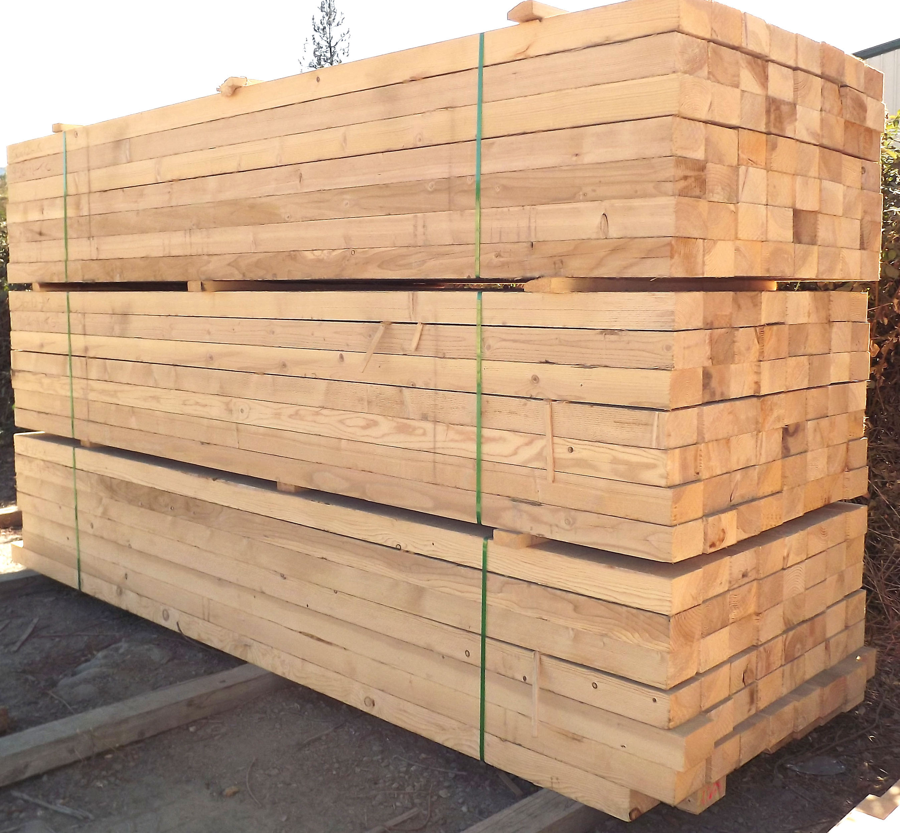 | 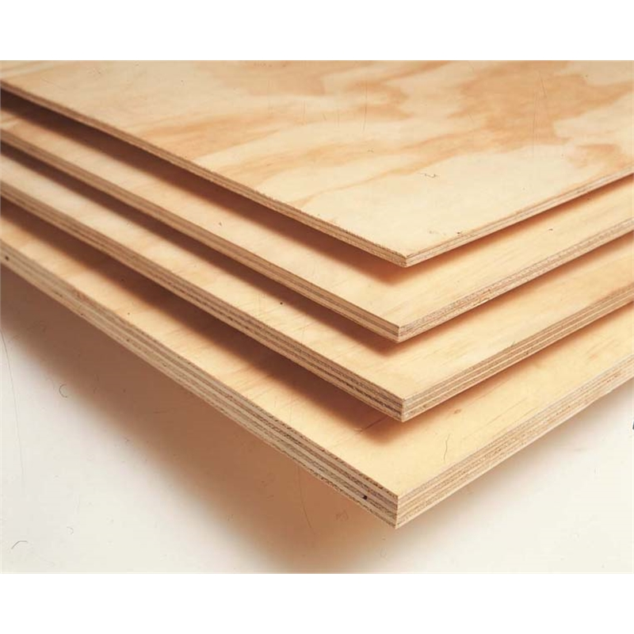 | 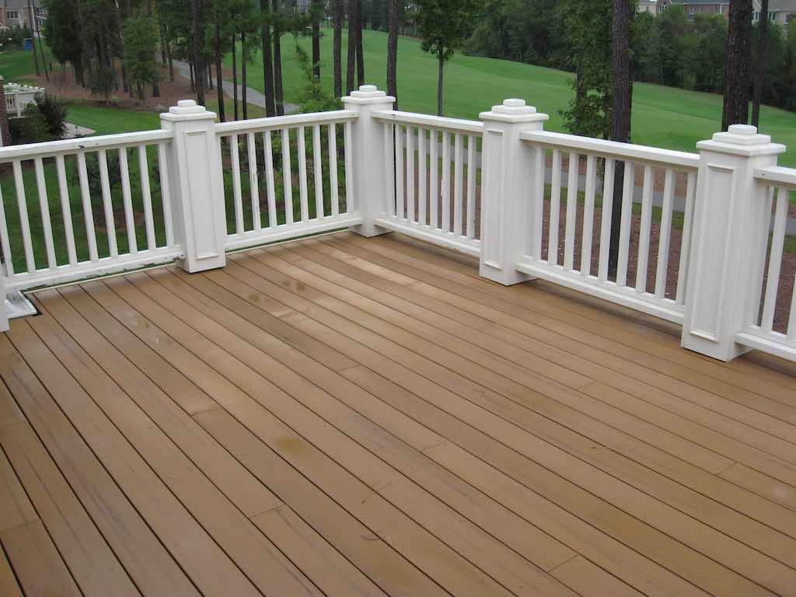 |
|
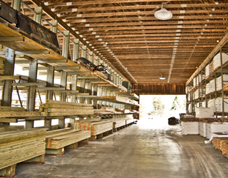 | 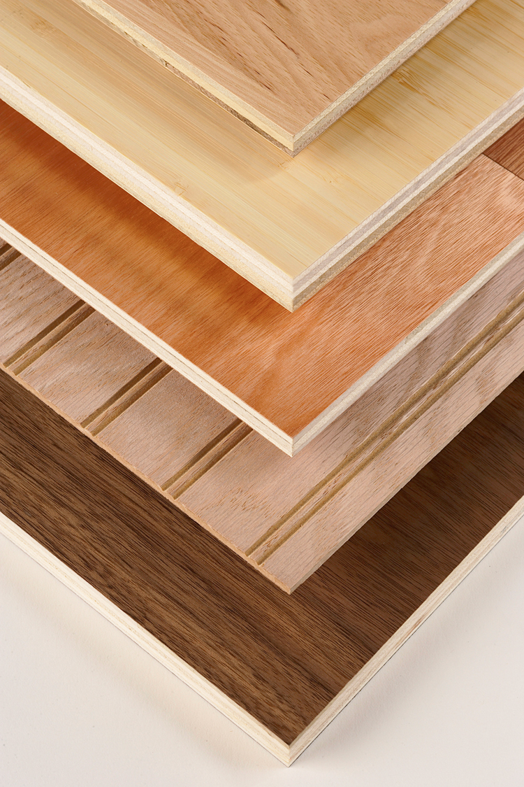 | 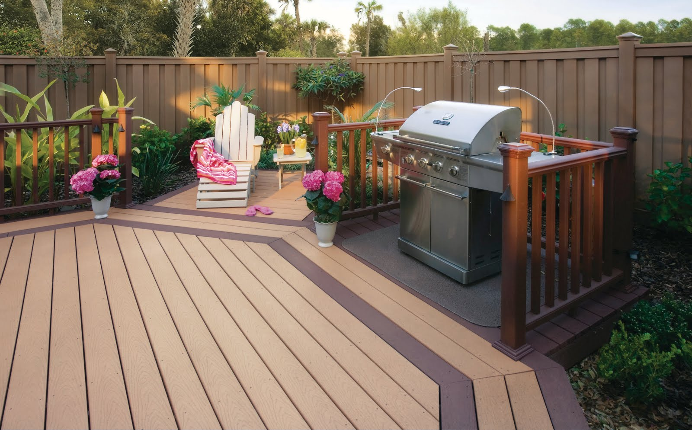 |